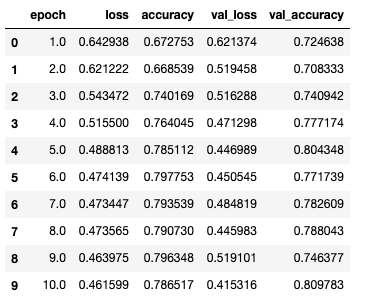
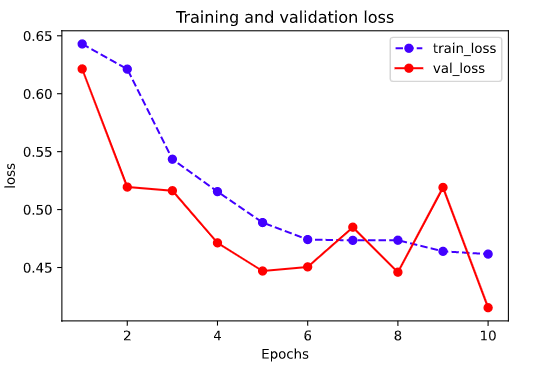
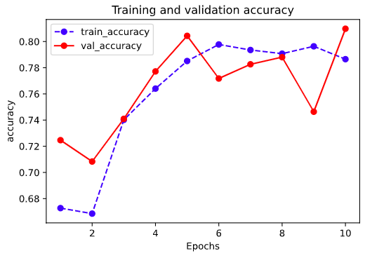

1-1,结构化数据建模流程范例#
import os
import datetime
#打印时间
def printbar():
nowtime = datetime.datetime.now().strftime('%Y-%m-%d %H:%M:%S')
print("\n"+"=========="*8 + "%s"%nowtime)
#mac系统上pytorch和matplotlib在jupyter中同时跑需要更改环境变量
os.environ["KMP_DUPLICATE_LIB_OK"]="TRUE"
一，准备数据#
titanic数据集的目标是根据乘客信息预测他们在Titanic号撞击冰山沉没后能否生存。
结构化数据一般会使用Pandas中的DataFrame进行预处理。
import numpy as np
import pandas as pd
import matplotlib.pyplot as plt
import torch
from torch import nn
from torch.utils.data import Dataset,DataLoader,TensorDataset
dftrain_raw = pd.read_csv('../data/titanic/train.csv')
dftest_raw = pd.read_csv('../data/titanic/test.csv')
dftrain_raw.head(10)

字段说明：
- Survived:0代表死亡，1代表存活【y标签】
- Pclass:乘客所持票类，有三种值(1,2,3) 【转换成onehot编码】
- Name:乘客姓名 【舍去】
- Sex:乘客性别 【转换成bool特征】
- Age:乘客年龄(有缺失) 【数值特征，添加“年龄是否缺失”作为辅助特征】
- SibSp:乘客兄弟姐妹/配偶的个数(整数值) 【数值特征】
- Parch:乘客父母/孩子的个数(整数值)【数值特征】
- Ticket:票号(字符串)【舍去】
- Fare:乘客所持票的价格(浮点数，0-500不等) 【数值特征】
- Cabin:乘客所在船舱(有缺失) 【添加“所在船舱是否缺失”作为辅助特征】
- Embarked:乘客登船港口:S、C、Q(有缺失)【转换成onehot编码，四维度 S,C,Q,nan】
利用Pandas的数据可视化功能我们可以简单地进行探索性数据分析EDA（Exploratory Data Analysis）。
label分布情况
%matplotlib inline
%config InlineBackend.figure_format = 'png'
ax = dftrain_raw['Survived'].value_counts().plot(kind = 'bar',
figsize = (12,8),fontsize=15,rot = 0)
ax.set_ylabel('Counts',fontsize = 15)
ax.set_xlabel('Survived',fontsize = 15)
plt.show()

年龄分布情况
%matplotlib inline
%config InlineBackend.figure_format = 'png'
ax = dftrain_raw['Age'].plot(kind = 'hist',bins = 20,color= 'purple',
figsize = (12,8),fontsize=15)
ax.set_ylabel('Frequency',fontsize = 15)
ax.set_xlabel('Age',fontsize = 15)
plt.show()

年龄和label的相关性
%matplotlib inline
%config InlineBackend.figure_format = 'png'
ax = dftrain_raw.query('Survived == 0')['Age'].plot(kind = 'density',
figsize = (12,8),fontsize=15)
dftrain_raw.query('Survived == 1')['Age'].plot(kind = 'density',
figsize = (12,8),fontsize=15)
ax.legend(['Survived==0','Survived==1'],fontsize = 12)
ax.set_ylabel('Density',fontsize = 15)
ax.set_xlabel('Age',fontsize = 15)
plt.show()

下面为正式的数据预处理
def preprocessing(dfdata):
dfresult= pd.DataFrame()
#Pclass
dfPclass = pd.get_dummies(dfdata['Pclass'])
dfPclass.columns = ['Pclass_' +str(x) for x in dfPclass.columns ]
dfresult = pd.concat([dfresult,dfPclass],axis = 1)
#Sex
dfSex = pd.get_dummies(dfdata['Sex'])
dfresult = pd.concat([dfresult,dfSex],axis = 1)
#Age
dfresult['Age'] = dfdata['Age'].fillna(0)
dfresult['Age_null'] = pd.isna(dfdata['Age']).astype('int32')
#SibSp,Parch,Fare
dfresult['SibSp'] = dfdata['SibSp']
dfresult['Parch'] = dfdata['Parch']
dfresult['Fare'] = dfdata['Fare']
#Carbin
dfresult['Cabin_null'] = pd.isna(dfdata['Cabin']).astype('int32')
#Embarked
dfEmbarked = pd.get_dummies(dfdata['Embarked'],dummy_na=True)
dfEmbarked.columns = ['Embarked_' + str(x) for x in dfEmbarked.columns]
dfresult = pd.concat([dfresult,dfEmbarked],axis = 1)
return(dfresult)
x_train = preprocessing(dftrain_raw).values
y_train = dftrain_raw[['Survived']].values
x_test = preprocessing(dftest_raw).values
y_test = dftest_raw[['Survived']].values
print("x_train.shape =", x_train.shape )
print("x_test.shape =", x_test.shape )
print("y_train.shape =", y_train.shape )
print("y_test.shape =", y_test.shape )
x_train.shape = (712, 15)
x_test.shape = (179, 15)
y_train.shape = (712, 1)
y_test.shape = (179, 1)
进一步使用DataLoader和TensorDataset封装成可以迭代的数据管道。
dl_train = DataLoader(TensorDataset(torch.tensor(x_train).float(),torch.tensor(y_train).float()),
shuffle = True, batch_size = 8)
dl_valid = DataLoader(TensorDataset(torch.tensor(x_test).float(),torch.tensor(y_test).float()),
shuffle = False, batch_size = 8)
# 测试数据管道
for features,labels in dl_train:
print(features,labels)
break
tensor([[ 0.0000, 0.0000, 1.0000, 0.0000, 1.0000, 0.0000, 1.0000,
0.0000, 0.0000, 7.8958, 1.0000, 0.0000, 0.0000, 1.0000,
0.0000],
[ 1.0000, 0.0000, 0.0000, 0.0000, 1.0000, 0.0000, 1.0000,
0.0000, 0.0000, 30.5000, 0.0000, 0.0000, 0.0000, 1.0000,
0.0000],
[ 1.0000, 0.0000, 0.0000, 1.0000, 0.0000, 31.0000, 0.0000,
1.0000, 0.0000, 113.2750, 0.0000, 1.0000, 0.0000, 0.0000,
0.0000],
[ 1.0000, 0.0000, 0.0000, 0.0000, 1.0000, 60.0000, 0.0000,
0.0000, 0.0000, 26.5500, 1.0000, 0.0000, 0.0000, 1.0000,
0.0000],
[ 0.0000, 0.0000, 1.0000, 0.0000, 1.0000, 28.0000, 0.0000,
0.0000, 0.0000, 22.5250, 1.0000, 0.0000, 0.0000, 1.0000,
0.0000],
[ 0.0000, 0.0000, 1.0000, 0.0000, 1.0000, 32.0000, 0.0000,
0.0000, 0.0000, 8.3625, 1.0000, 0.0000, 0.0000, 1.0000,
0.0000],
[ 0.0000, 1.0000, 0.0000, 1.0000, 0.0000, 28.0000, 0.0000,
0.0000, 0.0000, 13.0000, 1.0000, 0.0000, 0.0000, 1.0000,
0.0000],
[ 1.0000, 0.0000, 0.0000, 0.0000, 1.0000, 36.0000, 0.0000,
0.0000, 1.0000, 512.3292, 0.0000, 1.0000, 0.0000, 0.0000,
0.0000]]) tensor([[0.],
[1.],
[1.],
[0.],
[0.],
[0.],
[1.],
[1.]])
二，定义模型#
使用Pytorch通常有三种方式构建模型：使用nn.Sequential按层顺序构建模型，继承nn.Module基类构建自定义模型，继承nn.Module基类构建模型并辅助应用模型容器进行封装。
此处选择使用最简单的nn.Sequential，按层顺序模型。
def create_net():
net = nn.Sequential()
net.add_module("linear1",nn.Linear(15,20))
net.add_module("relu1",nn.ReLU())
net.add_module("linear2",nn.Linear(20,15))
net.add_module("relu2",nn.ReLU())
net.add_module("linear3",nn.Linear(15,1))
net.add_module("sigmoid",nn.Sigmoid())
return net
net = create_net()
print(net)
Sequential(
(linear1): Linear(in_features=15, out_features=20, bias=True)
(relu1): ReLU()
(linear2): Linear(in_features=20, out_features=15, bias=True)
(relu2): ReLU()
(linear3): Linear(in_features=15, out_features=1, bias=True)
(sigmoid): Sigmoid()
)
from torchkeras import summary
summary(net,input_shape=(15,))
----------------------------------------------------------------
Layer (type) Output Shape Param #
================================================================
Linear-1 [-1, 20] 320
ReLU-2 [-1, 20] 0
Linear-3 [-1, 15] 315
ReLU-4 [-1, 15] 0
Linear-5 [-1, 1] 16
Sigmoid-6 [-1, 1] 0
================================================================
Total params: 651
Trainable params: 651
Non-trainable params: 0
----------------------------------------------------------------
Input size (MB): 0.000057
Forward/backward pass size (MB): 0.000549
Params size (MB): 0.002483
Estimated Total Size (MB): 0.003090
----------------------------------------------------------------
三，训练模型#
Pytorch通常需要用户编写自定义训练循环，训练循环的代码风格因人而异。
有3类典型的训练循环代码风格：脚本形式训练循环，函数形式训练循环，类形式训练循环。
此处介绍一种较通用的脚本形式。
from sklearn.metrics import accuracy_score
loss_func = nn.BCELoss()
optimizer = torch.optim.Adam(params=net.parameters(),lr = 0.01)
metric_func = lambda y_pred,y_true: accuracy_score(y_true.data.numpy(),y_pred.data.numpy()>0.5)
metric_name = "accuracy"
epochs = 10
log_step_freq = 30
dfhistory = pd.DataFrame(columns = ["epoch","loss",metric_name,"val_loss","val_"+metric_name])
print("Start Training...")
nowtime = datetime.datetime.now().strftime('%Y-%m-%d %H:%M:%S')
print("=========="*8 + "%s"%nowtime)
for epoch in range(1,epochs+1):
# 1，训练循环-------------------------------------------------
net.train()
loss_sum = 0.0
metric_sum = 0.0
step = 1
for step, (features,labels) in enumerate(dl_train, 1):
# 梯度清零
optimizer.zero_grad()
# 正向传播求损失
predictions = net(features)
loss = loss_func(predictions,labels)
metric = metric_func(predictions,labels)
# 反向传播求梯度
loss.backward()
optimizer.step()
# 打印batch级别日志
loss_sum += loss.item()
metric_sum += metric.item()
if step%log_step_freq == 0:
print(("[step = %d] loss: %.3f, "+metric_name+": %.3f") %
(step, loss_sum/step, metric_sum/step))
# 2，验证循环-------------------------------------------------
net.eval()
val_loss_sum = 0.0
val_metric_sum = 0.0
val_step = 1
for val_step, (features,labels) in enumerate(dl_valid, 1):
# 关闭梯度计算
with torch.no_grad():
predictions = net(features)
val_loss = loss_func(predictions,labels)
val_metric = metric_func(predictions,labels)
val_loss_sum += val_loss.item()
val_metric_sum += val_metric.item()
# 3，记录日志-------------------------------------------------
info = (epoch, loss_sum/step, metric_sum/step,
val_loss_sum/val_step, val_metric_sum/val_step)
dfhistory.loc[epoch-1] = info
# 打印epoch级别日志
print(("\nEPOCH = %d, loss = %.3f,"+ metric_name + \
" = %.3f, val_loss = %.3f, "+"val_"+ metric_name+" = %.3f")
%info)
nowtime = datetime.datetime.now().strftime('%Y-%m-%d %H:%M:%S')
print("\n"+"=========="*8 + "%s"%nowtime)
print('Finished Training...')
Start Training...
================================================================================2020-06-17 20:53:49
[step = 30] loss: 0.703, accuracy: 0.583
[step = 60] loss: 0.629, accuracy: 0.675
EPOCH = 1, loss = 0.643,accuracy = 0.673, val_loss = 0.621, val_accuracy = 0.725
================================================================================2020-06-17 20:53:49
[step = 30] loss: 0.653, accuracy: 0.662
[step = 60] loss: 0.624, accuracy: 0.673
EPOCH = 2, loss = 0.621,accuracy = 0.669, val_loss = 0.519, val_accuracy = 0.708
================================================================================2020-06-17 20:53:49
[step = 30] loss: 0.582, accuracy: 0.688
[step = 60] loss: 0.555, accuracy: 0.723
EPOCH = 3, loss = 0.543,accuracy = 0.740, val_loss = 0.516, val_accuracy = 0.741
================================================================================2020-06-17 20:53:49
[step = 30] loss: 0.563, accuracy: 0.721
[step = 60] loss: 0.528, accuracy: 0.752
EPOCH = 4, loss = 0.515,accuracy = 0.764, val_loss = 0.471, val_accuracy = 0.777
================================================================================2020-06-17 20:53:50
[step = 30] loss: 0.433, accuracy: 0.783
[step = 60] loss: 0.477, accuracy: 0.785
EPOCH = 5, loss = 0.489,accuracy = 0.785, val_loss = 0.447, val_accuracy = 0.804
================================================================================2020-06-17 20:53:50
[step = 30] loss: 0.460, accuracy: 0.812
[step = 60] loss: 0.477, accuracy: 0.798
EPOCH = 6, loss = 0.474,accuracy = 0.798, val_loss = 0.451, val_accuracy = 0.772
================================================================================2020-06-17 20:53:50
[step = 30] loss: 0.516, accuracy: 0.792
[step = 60] loss: 0.496, accuracy: 0.779
EPOCH = 7, loss = 0.473,accuracy = 0.794, val_loss = 0.485, val_accuracy = 0.783
================================================================================2020-06-17 20:53:50
[step = 30] loss: 0.472, accuracy: 0.779
[step = 60] loss: 0.487, accuracy: 0.794
EPOCH = 8, loss = 0.474,accuracy = 0.791, val_loss = 0.446, val_accuracy = 0.788
================================================================================2020-06-17 20:53:50
[step = 30] loss: 0.492, accuracy: 0.771
[step = 60] loss: 0.445, accuracy: 0.800
EPOCH = 9, loss = 0.464,accuracy = 0.796, val_loss = 0.519, val_accuracy = 0.746
================================================================================2020-06-17 20:53:50
[step = 30] loss: 0.436, accuracy: 0.796
[step = 60] loss: 0.460, accuracy: 0.794
EPOCH = 10, loss = 0.462,accuracy = 0.787, val_loss = 0.415, val_accuracy = 0.810
================================================================================2020-06-17 20:53:51
Finished Training...
四，评估模型#
我们首先评估一下模型在训练集和验证集上的效果。
dfhistory

%matplotlib inline
%config InlineBackend.figure_format = 'svg'
import matplotlib.pyplot as plt
def plot_metric(dfhistory, metric):
train_metrics = dfhistory[metric]
val_metrics = dfhistory['val_'+metric]
epochs = range(1, len(train_metrics) + 1)
plt.plot(epochs, train_metrics, 'bo--')
plt.plot(epochs, val_metrics, 'ro-')
plt.title('Training and validation '+ metric)
plt.xlabel("Epochs")
plt.ylabel(metric)
plt.legend(["train_"+metric, 'val_'+metric])
plt.show()
plot_metric(dfhistory,"loss")

plot_metric(dfhistory,"accuracy")

五，使用模型#
#预测概率
y_pred_probs = net(torch.tensor(x_test[0:10]).float()).data
y_pred_probs
tensor([[0.0119],
[0.6029],
[0.2970],
[0.5717],
[0.5034],
[0.8655],
[0.0572],
[0.9182],
[0.5038],
[0.1739]])
#预测类别
y_pred = torch.where(y_pred_probs>0.5,
torch.ones_like(y_pred_probs),torch.zeros_like(y_pred_probs))
y_pred
tensor([[0.],
[1.],
[0.],
[1.],
[1.],
[1.],
[0.],
[1.],
[1.],
[0.]])
六，保存模型#
Pytorch 有两种保存模型的方式，都是通过调用pickle序列化方法实现的。
第一种方法只保存模型参数。
第二种方法保存完整模型。
推荐使用第一种，第二种方法可能在切换设备和目录的时候出现各种问题。
1，保存模型参数(推荐)
print(net.state_dict().keys())
odict_keys(['linear1.weight', 'linear1.bias', 'linear2.weight', 'linear2.bias', 'linear3.weight', 'linear3.bias'])
# 保存模型参数
torch.save(net.state_dict(), "../data/net_parameter.pkl")
net_clone = create_net()
net_clone.load_state_dict(torch.load("../data/net_parameter.pkl"))
net_clone.forward(torch.tensor(x_test[0:10]).float()).data
tensor([[0.0119],
[0.6029],
[0.2970],
[0.5717],
[0.5034],
[0.8655],
[0.0572],
[0.9182],
[0.5038],
[0.1739]])
2，保存完整模型(不推荐)
torch.save(net, '../data/net_model.pkl')
net_loaded = torch.load('../data/net_model.pkl')
net_loaded(torch.tensor(x_test[0:10]).float()).data
tensor([[0.0119],
[0.6029],
[0.2970],
[0.5717],
[0.5034],
[0.8655],
[0.0572],
[0.9182],
[0.5038],
[0.1739]])
如果对本书内容理解上有需要进一步和作者交流的地方，欢迎在公众号"Python与算法之美"下留言。作者时间和精力有限，会酌情予以回复。
也可以在公众号后台回复关键字：加群，加入读者交流群和大家讨论。